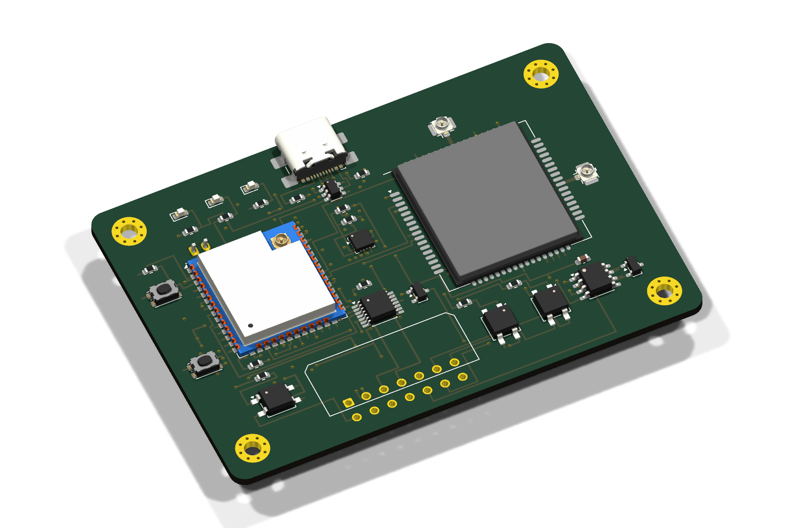
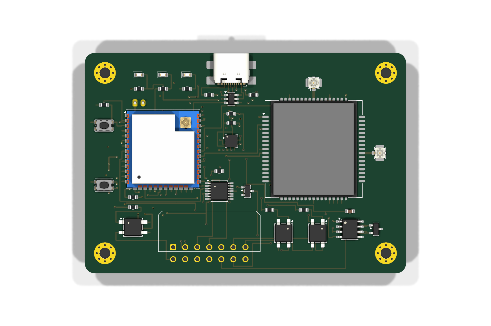
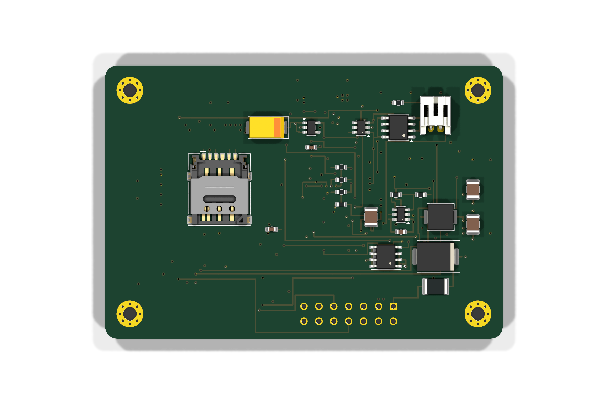
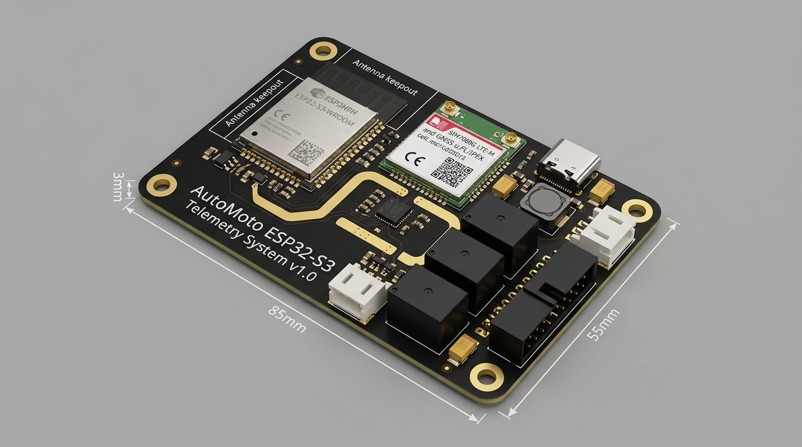
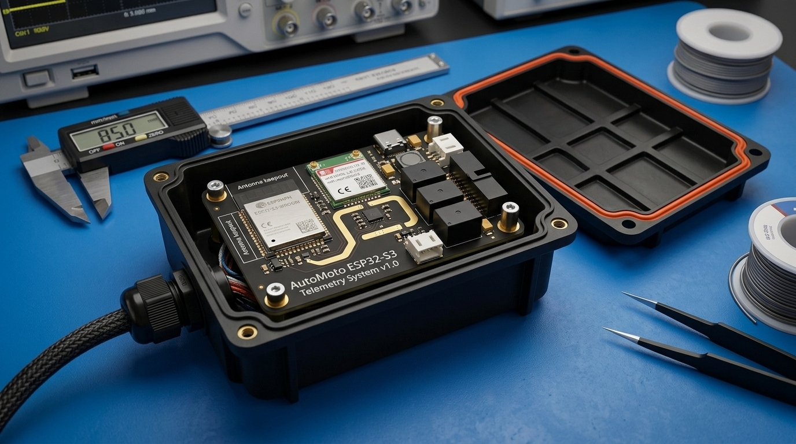
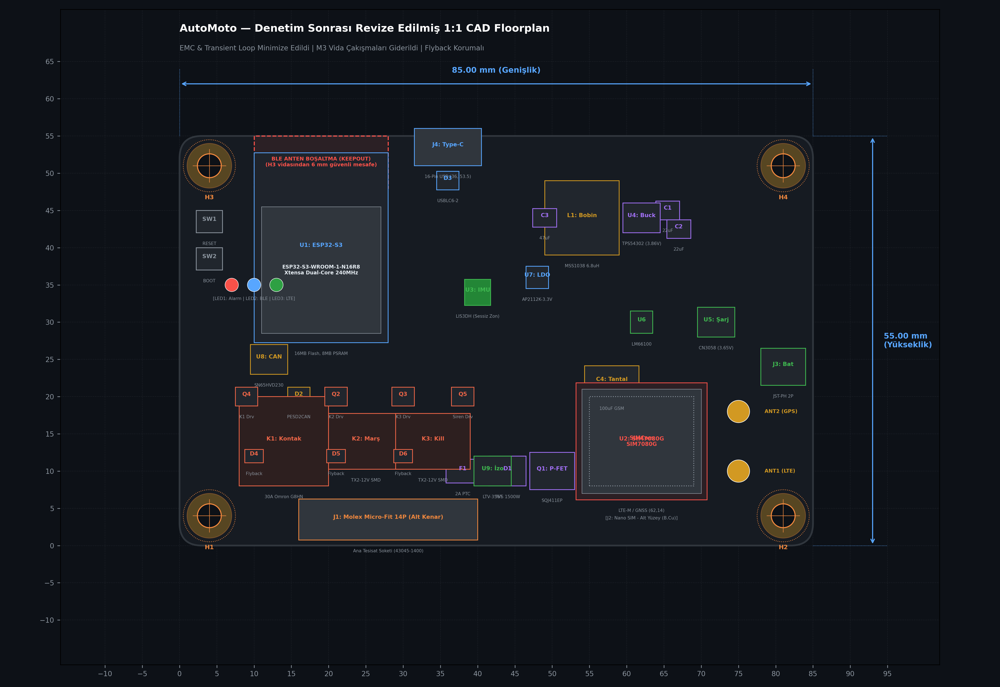
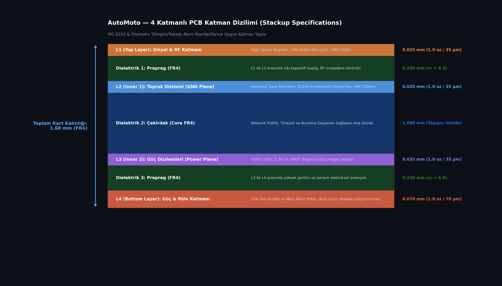
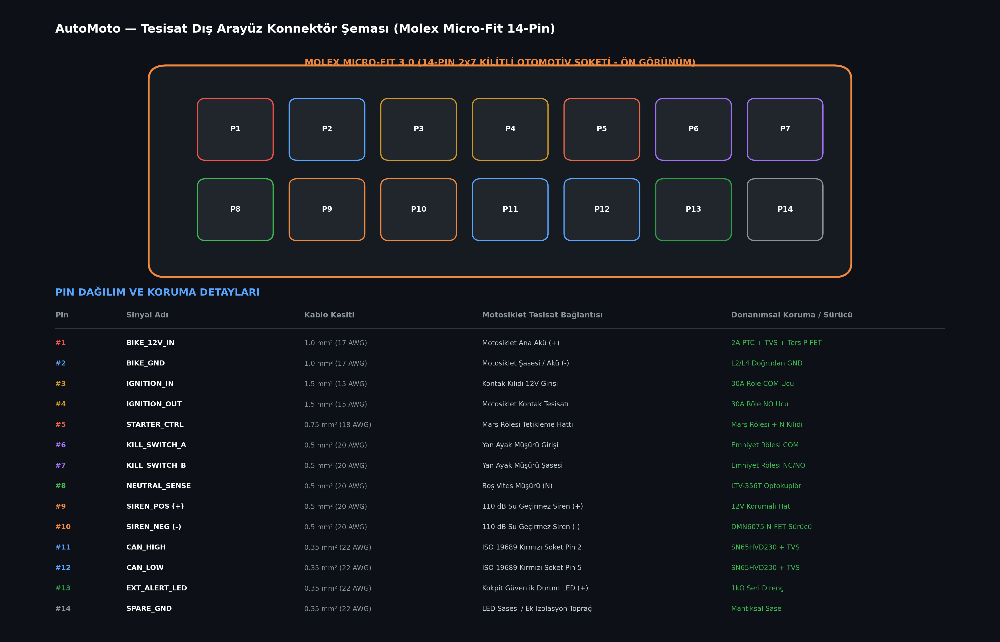

v2.2 Kusursuz Sıfır-Çakışma (58x38 mm) %52.9 Alan Tasarrufu Rotalanmış Bakır Hatlar (Routed) Infineon BTS7002 PROFET Opto-MOSFET SSR ESP32-S3-WROOM-1U & SIM7080G Akıllı Motosiklet Güvenlik ve Telemetri Sistemi







